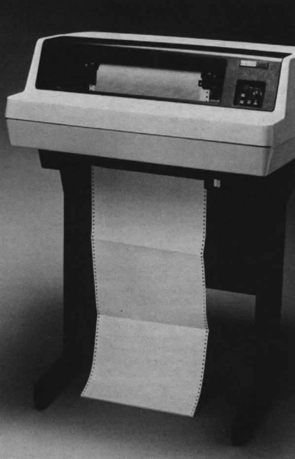

| Chapter 15 | Contents | Chapter 17 |
Chapter 16
The freestanding LP25, LP26 and LP27 system printers are ideal for a variety of environments – data processing, commercial, scientific, industrial and educational. All versions of the band printer family are supported by UNIBUS PDP-11 and VAX systems, and DECsystem-10s and -20s.
Since this family uses reliable band printer technology, your system printer is up when you need it. And whatever your workload requirements, Digital has a system printer for you. The LP25 and LP26 are made for medium-duty work environments in a one-shift environment, while the LP27 is designed for heavy-duty applications over two shifts or 16 hour-per-day operation.
The LP25 and LP26 printers operate at medium speeds – up to 300 and 600 lines per minute, while the LP27 tackles high-speed jobs at rates up to 1,200 lines per minute.
The following system printers are available.
|  |
The key features for Digital's system printers are:
With LP25, LP26 and LP27 system printers, a flat, steel band with raised metal characters on its face does the printing. This band is mounted on two pulleys – one to the right and one to the left of the paper. The LP26 and LP27 hammer banks have 132 hammers (one for each column), while the LP25's double-faced, shared hammer bank uses only 66 hammers. These hammers strike twice, providing odd column hammer strike, followed by an even column scan hammer strike. When the selected character in an odd or even column comes around on the moving band, the corresponding hammer strikes it. On the LP26 and LP27 versions, as the band moves past the paper, every hammer may strike one character per column, thus printing a line. Because the LP26 and the LP27 use 132 hammers, the hammer strikes are randomly intermixed depending on what character in any designated column needs to be printed. For example, you can print characters in seven odd-numbered columns, and then some characters in three even-numbered columns.
The LP25 prints at speeds up to 300 lines per minute using an uppercase, 64-character ASCII set and up to 215 lines per minute using the uppercase and lowercase 94-printing character ASCII set. The 64-character compressed band spaces 15 characters per inch, versus the standard 10 characters per inch. Because of this spacing difference, throughput speed decreases to 200 lines per minute.
The LP26 band printer handles print speeds of up to 600 lines per minute for an uppercase, 64-character ASCII set. When using the uppercase and lowercase 94-printing character ASCII set, a maximum speed of 445 lines per minute is possible.
With this printer, the uppercase, 64-character ASCII set is best for high-speed applications where maximum print speeds do not exceed 1,200 lines per minute. A minimum speed of 800 lines per minute is achieved by using the uppercase and lowercase, 94-printing character band.
The LP25, LP26 and LP27 print the full 94-character printable ASCII set, up to 132 characters per line. Character form is determined by the band style selected. Optional character set bands for the LP26 and LP27 include British, German, Finnish/Swedish, Danish/Norwegian and Spanish/Portuguese. With the LP25, you can choose any of these, in addition to a compressed printing band, which prints up to 215 characters per line. The band can be easily changed in a matter of minutes.
The LP25, LP26 and LP27 accept continuous fanfold edge-perforated paper between 7.6 centimeters (3 inches) and 40.6 centimeters (16 inches) wide. Form lengths of 27.9 or 30 centimeters (11 or 12 inches) are possible. They accept single- or multipart carbon forms, and can produce an original and five copies of multipart carbon forms, up to a maximum thickness of 0.06 centimeters (0.025 inches).
The following accessories, supplies, components, and spares are available for the LP25, LP26 and LP27 system printers. Check with your sales representative or Digital's Installed Base Group for the latest information.
| Part Number | Description |
|---|---|
| LP25R-06 | Six ribbon cartridges, 2.54 cm wide × 45 m long (1 in wide × 50 yd long), 4 mil thick |
| Part Number | Description |
|---|---|
| H9850-FA | Paper caddy with four 5.1 cm (2 in) swivel casters for transporting printer paper, 40 cm wide × 29.8 cm deep (15¾ in × 11¾ in), charcoal brown |
| LP25X-AA | American Band/Prom 64 characters, 10 char/in. For use with LP25. |
| LP26X-AA | Same as above but for the LP26. |
| LP25X-AB | American Band/Prom 96 characters, 10 char/in. For use with LP25. |
| LP26X-AB | Same as above but for the LP26. |
| LP25X-AC | American Band/Prom 64 characters, 15 char/in. For use with LP25. |
| LP26X-AC | Same as above but for the LP26. |
| LP25X-BA | UK band/Prom 64 characters, 15 char/in. For use with LP25. |
| LP26X-BA | Same as above but for the LP26. |
| LP25X-BB | UK band/Prom 96 characters, 10 char/in. For use with LP25. |
| LP26X-BB | Same as above but for the LP26. |
| LP25X-BC | UK band/Prom 64 characters, 15 char/in. For use with LP25. |
| LP26X-BC | Same as above but for the LP26. |
| LP25X-CA | German Band/Prom 64 characters, 10 char/in. For use with LP25. |
| LP26X-CA | Same as above but for the LP26. |
| LP25X-CB | German Band/Prom 96 characters, 10 char/in. For use with LP25. |
| LP26X-CB | Same as above but for the LP26. |
| LP25X-DA | Finnish/Swedish Band/Prom 64 characters, 10 char/in. For use with LP25. |
| LP26X-DA | Same as above but for the LP26. |
| LP25X-DB | Finnish/Swedish Band/Prom 96 characters, 10 char/in. For use with LP25. |
| LP26X-DB | Same as above but for the LP26. |
| LP25X-EA | Danish/Norwegian Band/Prom 64 characters, 10 char/in. For use with LP25. |
| LP26X-EA | Same as above but for the LP26. |
| LP25X-EB | Danish/Norwegian Band/Prom 96 characters, 10 char/in. For use with LP25. |
| LP26X-EB | Same as above but for the LP26. |
| LP25X-JA | Katakana Band/Prom 128 characters, 64-ASCII, 64 Japanese. For use with LP25. |
| LP25X-SA | Spanish/Portuguese Band/Prom 64 characters, 10 char/in. For use with LP25 and LP26. |
| LP26X-SA | Same as above but for LP26. |
| LP25X-SB | Spanish/Portuguese Band/Prom 96 characters, 10 char/in. For use with LP25 and LP26. |
| LP26X-SB | Same as above but for LP26. |
| LP27X-AA | American Band, 64 characters, 10 char/in. For use with LP27. |
| LP27X-AB | American Band, 96 characters, 10 char/in. For use with LP27. |
| LP27X-BA | UK Band, 64 characters, 10 char/in. For use with LP27. |
| LP27X-BB | UK Band, 96 characters, 10 char/in. For use with LP27. |
| LP27X-CA | German Band, 64 characters, 10 char/in. For use with LP27. |
| LP27X-CB | German Band, 96 characters, 10 char/in. For use with LP27. |
| LP27X-DA | Finnish/Swedish Band, 64 characters, 10 char/in. For use with LP27. |
| LP27X-DB | Finnish/Swedish Band, 96 characters, 10 char/in. For use with LP27. |
| LP27X-EA | Danish/Norwegian Band, 64 characters, 10 char/in. For use with LP27. |
| LP27X-EB | Danish/Norwegian Band, 96 characters, 10 char/in. For use with LP27. |
| LP27X-SA | Spanish/Portuguese Band, 64 characters, 10 char/in. For use with LP27. |
| LP27X-SB | Spanish/Portuguese Band, 96 characters, 10 char/in. For use with LP27. |
| 70-16560-30 | Lineprinter interface cable, 9.2 m (30 ft) |
| 70-16560-50 | Lineprinter interface cable, 15.2 m (50 ft) |
| 70-16560-A0 | Lineprinter interface cable, 3.0 m (10 ft) |
| STKIT-AA | Systems Terminal Tool Kit (60 Hz) |
| STKIT-AB | Systems Terminal Tool Kit (50 Hz) |
| STKIT-MS | Metric Supplement Tool Roll |
| Part Number | Description |
|---|---|
| SLP25-00 | LP25 spares kit |
| SLP26-00 | LP26 spares kit |
| SLP27-00 | LP27 spares kit |
The LP25 and LP26 systems printers have two control panels, one that is externally accessible, and one that is inside the printer's cover.
This LED is lit when power is on.
When the printer is on-line, the indicator is lit. Pressing the switch alternately puts the printer on-line and off-line. In case a paper low situation is detected, this switch enables you to continue printing to the bottom of the form. To do this, press the switch. Each time the switch is pressed, the printer advances the page one line at a time until the bottom of the page is reached. This is especially important if you are printing on preprinted forms.
This is lit during powerup or the presence of a fault condition. The specific alarm condition can be identified by the STATUS indicator display. Pressing the ALARM/CLEAR switch clears the printer logic.
When activated, this switch advances the form one line if the printer is off-line.
If the printer is off-line, this switch advances the paper to the top-of-the-form position of the next form.
This control maintains equal printing density on the right and left side of the characters.
This two-position switch allows you to select either six or eight lines per inch.
This three-position switch allows you to obtain one of three possible test patterns. Pressing the ON/OFF switch with the TEST switch in the left or right position places the printer in one of three self-test modes. You can select a sliding pattern, fixed characters, or band image.
This alphanumeric display indicates either the operation being performed or a fault that caused printer failure.
This is a variable control that allows you to select printing on single- or multiple-part forms. Use the lowest possible setting that gives a clear printout. This helps you get the maximum life use from the hammers, ribbon and print band.
The controls and indicators found on the LP27 system printers are listed below.
| Control/Indicator | Function |
|---|---|
| POWER Switch | Allows ac power to be applied to the printer. Indicates ON/1 or OFF/0. |
| POWER ON Indicator | Lights up when power is on. |
| On-line Indicator | Illuminates when printer is ready and on-line or in self-test mode. |
| LAMP CHECK Switch | Activating this switch lights all control panel indicators to verify lamp operation. |
| CLEAR Switch | When pressed, this switch clears the ALARM indicator and printer logic. |
| ON/OFF LINE Switch | When depressed, this switch places the printer in the on-line condition and illuminates the indicator. If the self-test mode is selected, pressing the ON/OFF LINE switch alternately starts or stops self-test mode. |
| SINGLE CYCLE Switch | Prints one line of data. |
| TOP OF FORM Switch | This advances the paper to the next top-of-form position. This switch is disabled when the printer is on-line or in self-test mode. |
| PAPER STEP Switch | Advances the paper one line. When the printer is on-line, in self-test mode, the switch is disabled. |
| △ FORMS | This switch advances the paper upward 0.035 centimeters (0.014 inches). If pressed for more than one second, the form advances forward continuously at a rate of 3.6 centimeters per second (1.40 inches per second). |
| ▽ FORMS | This momentary switch reverses the form downward 0.035 centimeters (0.014 inches). If pressed for more than one second, the form moves backwards continuously at a rate of 3.6 centimeters per second (1.40 inches per second). |
| STATUS Indicator | This alphanumeric display indicates either the operation being performed or a fault that caused printer failure. |
| SELF TEST Switch | This three-position switch allows you to obtain one of three possible test patterns. Pressing the ON/OFF switch with the TEST switch in the left or right position places the printer in one of three self-test modes. You can select a sliding pattern, fixed characters, or band image. |
| 6/8 LPI | Selects either six or eight lines per inch spacing. TOP OF FORM switch must be reset after changing this setting. |
| DENSITY | This three-position control allows the hammer energy level to determine print density. |
| 80/FULL | When set to 80, each line of print terminates at 80 characters. In the FULL position, a 132-character line is printed. This switch is operable only while the printer is in self-test mode. |
| FLS/VFU | This two-position switch selects either the forms length switch or the VFU mode for forms control. In the VFU mode, the VFU memory is loaded directly from the user system (DAVFU). Note: DAVFU is supported on the LP27-2A and the LP27-2B only. |
| FORMS LENGTH SELECT Switch | Two thumbwheel switches select the desired length of the forms to be printed. |
The LP11 controller has two internal registers: the Control and Status Register (LXCS) and the Data Buffer Register (LXDB). Refer to Appendix J for the LXCS and LXDB diagrams.
When the READY bit in the control and status register is set, the lineprinter is ready to accept a character from the processor.
The processor loads characters one by one into the data buffer register in the controller. The controller then transfers the characters to the 132-character data buffer in the lineprinter. The line length of 132 characters corresponds directly to this 132-character data buffer.
The current data buffer register (LXDB) contents are automatically printed out whenever any of the three ASCII control codes (Carriage Feed, Line Feed, Form Return) is recognized. The Carriage Return (CR) code prints the line but does not advance the paper. The Line Feed (LF) code advances the paper one line, while the Form Feed (FF) code advances the paper to the top of the next page.
Forms may be as long as 143 lines, and 12 different Vertical Tab Stops (channels) are available.
The Start Load command (3568) initializes the PVFU and causes all subsequent characters to be loaded into the PVFU buffer. The Stop Load command (3578) indicates the end of the characters to be loaded into the PVFU buffer. The PVFU buffer allows storage of two characters for each line of the form. The PVFU only uses the low-order six bits of each character. The 12 bits (two characters) stored per line in the PVFU correspond to the 12 Vertical Tab Stops.
A 1 bit in a bit position in one of these two characters assigns a Vertical Tab Stop to that line. Bits 0 through 5 of the first characters correspond to Vertical Tab Stops 1 through 6 while bits 0 through 5 of the second character correspond to Vertical Tab Stops 7 through 12.
Vertical Tab Stops are commands 2008 through 2138. A Vertical Tab Stop command sent anywhere in a line of characters causes the paper to advance to the next PVFU line indicated by that Vertical Tab Stop command at the next Line Feed code. Line 1 is assigned to Vertical Tab Stop 1 and the last line of the form is assigned to Vertical Tab Stop 12.
Sending command 2008 causes the paper to advance to the top of the next form. Commands 2018 through 2128 correspond to Vertical Tab Stops 2 through 11 and cause the paper to advance to the next line that is loaded with that Vertical Tab Stop. Command 2138 causes the paper to advance to the bottom of the form.
The LP11 controller uses bus request (BR) interrupts to gain control of the UNIBUS to perform a vectored interrupt, which causes the program to branch to an interrupt service routine. A BR interrupt can occur only if the INTERRUPT ENABLE bit in the control and status register is set. Once INTERRUPT ENABLE bit is set, an interrupt request is generated whenever either the READY or ERROR bit in the control and status register is set.
When the READY bit is set, the lineprinter is ready to accept the next character to be loaded into the data buffer register (LXDB). When the ERROR bit is set, it indicates that some error condition exists. In this case, an interrupt is generated to cause the program to branch to an error handling routine.
The interrupt priority level is 4 and the interrupt vector address is 200. Note that the priority level be changed with a priority plug and the vector address can be changed by jumpers in the interrupt control logic. However, any Digital programs or other software referring to the priority level or interrupt vector address must also be changed if the priority plug or vector address is changed.
Digital's LP25, LP26 and LP27 are designed for long life expectancy, high-volume throughput, and continuous smooth performance. While Digital's system printers are designed for a maximum amount of usage with a minimum amount of maintenance, preventative maintenance, such as routine inspections, cleaning, and adjustments, ensure good print quality and printer reliability. Digital recommends that maintenance be handled by trained personnel – whether yours or ours.
The three-position TEST switch allows you to exercise the self-test function and obtain one of three possible test patterns. Pressing the ON/OFF switch with the TEST switch in the left or right position places the printer in the self-test mode.
To exit from self-test mode, place the TEST switch in the center position and press the ON/OFF LINE switch.
The LP25, LP26 and LP27 system printers have a diagnostic status indicator located on the operator control panel. The indicator displays a status code that depicts the operation being performed or a fault that caused the printer to go off-line. Below are listed some of the common status codes, what they mean, and what corrective action can be taken.
01 – Low/out of paper.
02 – Paper fault motion.
03 – Band cover not locked.
04 – Hammer/band gate not closed.
06 – Ribbon fault.
17 – Loss of print synchronization.
21 – Print inhibit.
67 – Self-test mode.
76 – ON LINE, print inhibit.
77 – ON LINE.
88 – OFF LINE, Ready.
P – Power fault.
For information on other status indicators, consult your User's Guide or Operator's Guide.
The following documents contain more detailed information about the LP25, LP26 and LP27 systems' printers.
Also of interest are:
If you require information not contained in these documents, contact your local Digital representative.
| Printing speed | |
| LP25/LSP25 | 300 l/min with 64 character set |
| LP25/LSP25 | 215 l/min with 96 character set |
| LP26/LSP26 | 600 l/min with 64 character set |
| LP26/LSP26 | 445 l/min with 96 character set |
| LP27 | 1,200 l/min with 64 character set |
| LP27 | 800 l/min with 96 character set |
| Print technology | Full-character, impact, band |
| Character spacing | 10 char/in |
| Line spacing | 6 or 8 l/in |
| Paper slew speed | |
| LP25/LSP25, LP26/LSP26 | 37.5 cm/s (15 in/s) |
| LP27 | 127 cm/s (50 in/s) |
| Character set | |
| LSP25, LSP26, LP27 | 64, 96-character ASCII (printing and nonprinting characters) |
| LP25, LP26 | 64-character ASCII |
| Buffer capacity | 132 characters |
| Type | Fanfold |
| Dimensions | |
| Fanfold: LP25, LP26 | 7.6 cm - 40.6 cm (3 in - 16 in) |
| Fanfold: LP27 | 8.9 cm - 47.6 cm (3.5 in - 18.8 in) |
| Multipart forms | Up to 6 parts, fanfold carbon |
| Thickness: LP25, LP26 | 0.06 cm (0.025 in) |
| Thickness: LP27 | 0.05 cm (0.020 in) |
| Line voltage and frequency | 90 - 132 VAC, at 60 Hz 190 - 250 VAC, at 50 Hz |
| Interface (controller) current | 1.5 A at 5 Vdc |
| Power Consumption | |
| LP25 | 350 W |
| LP26 | 475 W |
| LP27 | 455 W, standby 1100 W, printing |
| Heat dissipation | |
| LP25 | 1,200 Btu/hr |
| LP26 | 1,619 Btu/hr |
| LP27 | 3,754 Btu/hr |
| Temperature | 10°C - 38°C (50°F - 100°F) |
| Relative humidity | 20% - 80% |
| LP25 | LP26 | LP27 | |
|---|---|---|---|
| Height | 111 cm (43.8 in) | 111 cm (43.8 in) | 124.5 cm (49 in) |
| Width | 76 cm (30.3 in) | 76 cm (30.3 in) | 88.9 cm (35 in) |
| Depth | 85 cm (33.6 in) | 85 cm (33.6 in) | 96.5 cm (38 in), with paper puller |
| Weight | 89 kg (195 lb) | 89 kg (195 lb) | 257.2 kg (567 lb) |